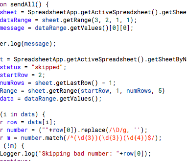

Made Amazon Route 53 the DNS for an Existing Domain

App Scripts: Created an texting app using google sheets
About Me
I’m a Senior QA Engineer and Photographer with an obsession for creating excellent user experiences and improving engineering processes. Worked for such companies as Venmo, GoFly.com, Granicus, Intel, and Market Motive.